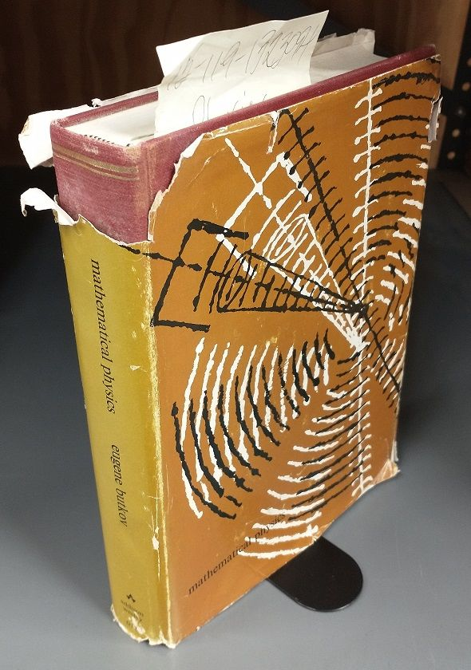
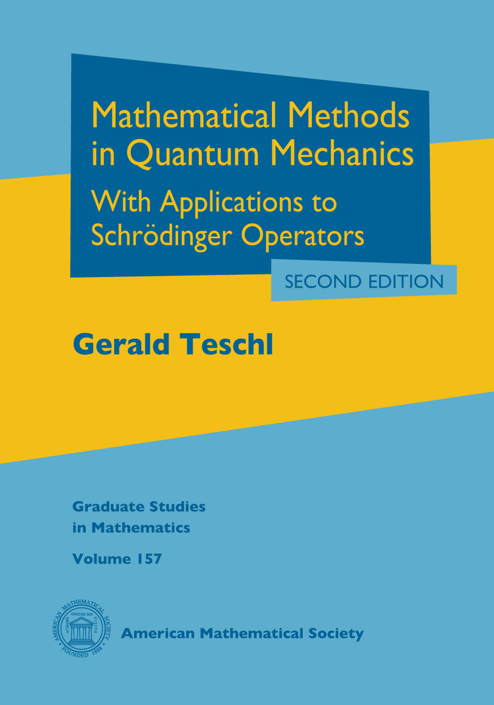

Here are some suggestions for general mathematical physics and chemistry.
“Mathematical Physics” by Butkov
Book: “Mathematical Physics” by Eugene Butkov, Addison-Wesley Publishing Company (1968)

This is a classic textbook used in mathematical physics courses since its first edition in 1968. You can find PDFs lying about on the internet. The book is suitable for all students of quantum chemistry, from undergraduate to graduate students.
The topics covered include: * Vector calculus - Complex analysis - Ordinary differential equations - Distributions - Fourier series and the Fourier transform - The Laplace transform - Hilbert space and the postulates of Quantum Mechanics - Perturbation theory - Tensors - Calculus of Variations
“Mathematical Methods for Physicists” by Arfken, Weber, and Harris
Book: “Mathematical Methods for Physicsts: A Comprehensive Guide” by George B. Arfken, Hans J. Weber, and Frank E. Harris, 7th edition, Academic Press (2013)
Another classic, the tome by Arfken, Weber, and Harris is a standard textbook in mathematical physics for undergraduate and graduate students in physics. Luckily, it is archived on archive.org, see link above. It is highly recommended, and contains treatments of, for example: - Complex analysis - Vector calculus - Tensor analysis and differential forms - Partial differential equations - Green’s functions - Angular momentum - Various special functions - Integral transforms - Probability and statistics
“Mathematical Methods in Physics” by Blanchard and Brüning
Book: “Mathematical Methods in Physics” by Philippe Blanchard and Erwin Brüning, Second edition, Birkhäuser (2015)
DOI: 10.1007/978-3-319-14045-2
This is a textbook intended for graduate students in mathematics and physics. Its level is higher and in some respects more modern than the book by Butkov. The topics covered include: - Locally convex topological vector spaces and distribution theory - Complex analysis of several variables - Fourier transformations - Sobolev spaces - Advanced aspects of Hilbert spaces - Linear operators and advanced spectral theory, also for unbounded operators - Rigged Hilbert space - Operator algebras, e.g., C*-algebra - Calculus of variations - Boundary value problems and eigenvalue problems - Density functional theory of atoms and molecules
“Mathematical Concepts of Quantum Mechanics” by Gustafsson and Sigal
Book: “Mathematical Concepts of Quantum Mechanics” by Stephen J. Gustaffson, and Israel Michael Sigal, Second Edition, Springer (2011).
An old PDF from Sigal’s web site: https://www.math.toronto.edu/~sigal/semlectnotes/1.pdf
This book is essentially a set of lecture notes given for physics and mathematics students at late undergraduate or early graduate stages of their studies. It is a well-structured book on what the title says. I use it quite a lot, as it contains many useful results. The topics include: - Analysis of atomic and molecular quantum systems - Treatments of basic quantum mechanical systems using a little more rigor than usual - Many-particle theory - Perturbation theory - Theorems on spectra of many-particle operators - Resonances - Path-integral formalism of Feynman - Second quantization
“Mathematical Methods in Quantum Mechanics” by Teschl
Book: “Mathematical Methods in Quantum Mechanics: With Applications
to Schrödinger Operators” by Gerald Teschl, Seccond ed., American Mathematical Society (2014).
Web link: https://bookstore.ams.org/gsm-157
Full text PDF at the Author’s web site: https://www.mat.univie.ac.at/~gerald/ftp/book-schroe/index.html

This is a modern classic in mathematical physics, its primary goal is the rigorous treatment of nonrelativistic quantum mechanics. Topics include: - Hilbert and Banach spaces - The Spectral theorem for unbounded self-adjoint operators - Quantum dynamics and the Stone-von-Neumann theorem - Perturbation theory - Schrödinger operators, i.e., the description of atomic systems - Scattering theory - Lebesgue integration
“Methods of Modern Mathematical Physics” by Reed and Simon
Book series: “Methods of modern mathematical physics”, by Michael Reed and Barry Simon, Academic Press (1980)
There are some links to the full text in the wild: https://www.astrosen.unam.mx/~aceves/Metodos/ebooks/reed_simon1.pdf
A comprehensive book series with advanced treatments of, well, the methods of mathematical physics. The volumes are: ### I: Functional Analysis {#i-functional-analysis}
This is the volume I am personally acquainted with. Some topics covered are: - Measure and integration - Hilbert space - Locally convex topological vector spaces - Bounded and unbounded operators - The spectral theorem
II: Fourier Analysis and Self-Adjointness
III: Scattering Theory
IV: Analysis of Operators
Untested sources
In this sections you can find some sources I have found online that may be useful. However, I have not checked their quality, and your mileage might vary:
“Mathematical Physical Chemistry” by Hotta
Mathematical Physical Chemistry.png
Book: “Mathematical Physical Chemistry: Practical and Intuitive Methodology” by Shu Hotta, Third Edition, Springer (2023)
This book is somewhat odd - it is not a mathematics book, for that it is not sufficiently rigorous, and neither is it a physical chemistry textbook. However, it goes through the classical selection of physical chemistry topics in a more mathematical manner, providing detailed derivations along the way. It reads like your usual typed-up lecture notes from a theory-heavy physical chemistry curse. It seems like an excellent companion to studies in physical chemistry, and in particular a very good way for students to learn and understand the mathematical concepts needed for quantum chemistry.
 This is a textbook intended for graduate students in mathematics and physics. Its level is higher and in some respects more modern than the book by Butkov. The topics covered include: - Locally convex topological vector spaces and distribution theory - Complex analysis of several variables - Fourier transformations - Sobolev spaces - Advanced aspects of Hilbert spaces - Linear operators and advanced spectral theory, also for unbounded operators - Rigged Hilbert space - Operator algebras, e.g., C*-algebra - Calculus of variations - Boundary value problems and eigenvalue problems - Density functional theory of atoms and molecules
This is a textbook intended for graduate students in mathematics and physics. Its level is higher and in some respects more modern than the book by Butkov. The topics covered include: - Locally convex topological vector spaces and distribution theory - Complex analysis of several variables - Fourier transformations - Sobolev spaces - Advanced aspects of Hilbert spaces - Linear operators and advanced spectral theory, also for unbounded operators - Rigged Hilbert space - Operator algebras, e.g., C*-algebra - Calculus of variations - Boundary value problems and eigenvalue problems - Density functional theory of atoms and molecules Weblink: https://link.springer.com/book/10.1007/978-3-030-59562-3
Weblink: https://link.springer.com/book/10.1007/978-3-030-59562-3